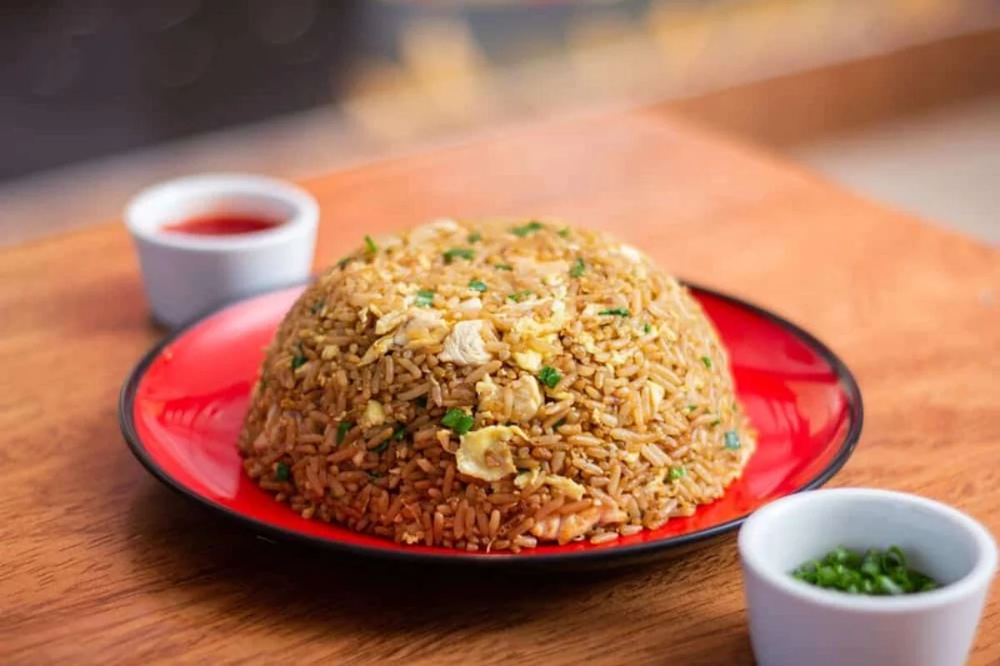

Arroz chaufa

Descripción:
Plato fusión de la cocina china y peruana. Se trata de arroz frito con huevo, cebolla china y salsa de soya.
Ingredientes:
- 2 tazas de arroz cocido (frío)
- 2 huevos
- 1 pechuga de pollo en cubos (opcional)
- 1/2 taza de cebolla china picada
- 2 cucharadas de sillao (salsa de soya)
- 1 cucharadita de aceite de ajonjolí (opcional)
- Aceite, sal y pimienta
Preparación:
- En una sartén grande o wok, calienta un poco de aceite y fríe los huevos revueltos. Retira.
- Saltea el pollo con sal y pimienta hasta que esté cocido.
- Añade el arroz cocido y mezcla bien.
- Incorpora el huevo, la cebolla china, el sillao y el aceite de ajonjolí.
- Saltea todo junto por unos minutos y sirve caliente.
Volver al Inicio